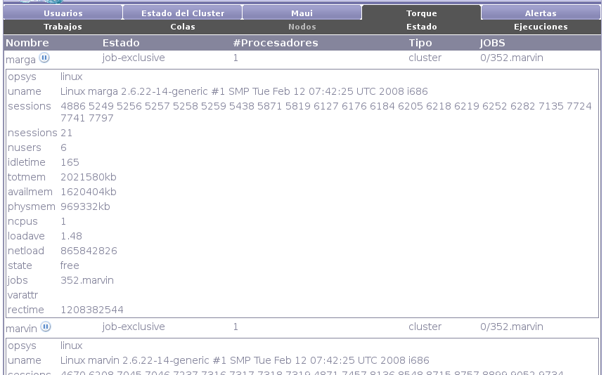

Next: Estado Up: Torque Previous: Colas Contents
Torque mantiene información de todos los nodos del cluster. En la interfaz de nodos de Torque se muestran todos los nodos del cluster junto con su estado, la cantidad de procesadores con la que cuentan, si estan ejecutando un trabajo, etc. Además nos ofrece la posibilidad de dar de baja un nodo temporalmente para que no sea tenido en cuenta al momento de la ejecución de trabajos.
